Префектура Канагава · Ёкогама · спа и сауна
Sky Spa Yokohama: финская сауна, римская парная и ауфгус на 14-м этаже
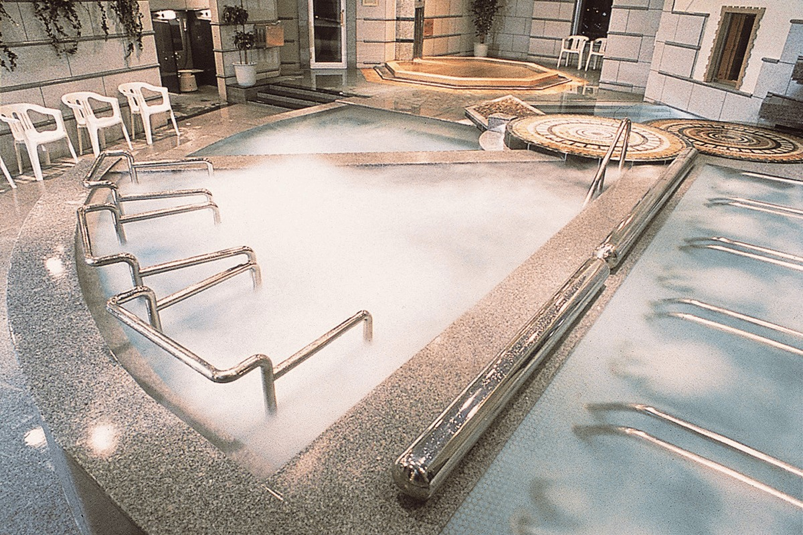
Sky Spa Yokohama занимает 14-й этаж здания Sky Building в Ёкогаме и работает круглые сутки. Его устроили по европейскому образцу: здесь есть финская сауна, римская парная и ауфгус, немецкая программа с ароматным паром.
Мужская зона
Вода с видом на город
Мужская половина спа начинается с большого зала с водой. Здесь есть джакузи с массажным эффектом и лежачая ванна: в ней лежат на спине, подолгу отмокают и смотрят на Ёкогаму за окнами. Рядом холодная купель. Она снимает накопившийся жар и позволяет чередовать горячую и холодную воду.
Углекислая ванна из кипариса хиноки
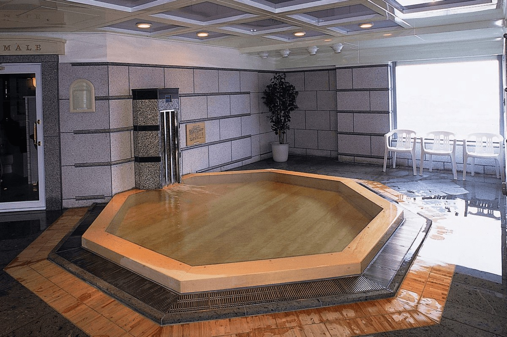
В восьмиугольной ванне из кипариса хиноки налита вода, в которой растворено больше 1000 ppm углекислого газа. Температура у неё невысокая, чтобы можно было сидеть долго без нагрузки на тело. По описанию спа, углекислота через кожу расширяет сосуды и усиливает кровоток. Слабокислая вода мягко подтягивает кожу, ускоряет обмен веществ, помогает расслабиться и снижает молочную кислоту, от которой болят мышцы и суставы.
Подачу углекислого газа в мужском зале останавливают на обслуживание оборудования с 2:00 до 6:00 и с 8:20 до 8:30 (по данным 2021 года).
Финская сухая сауна
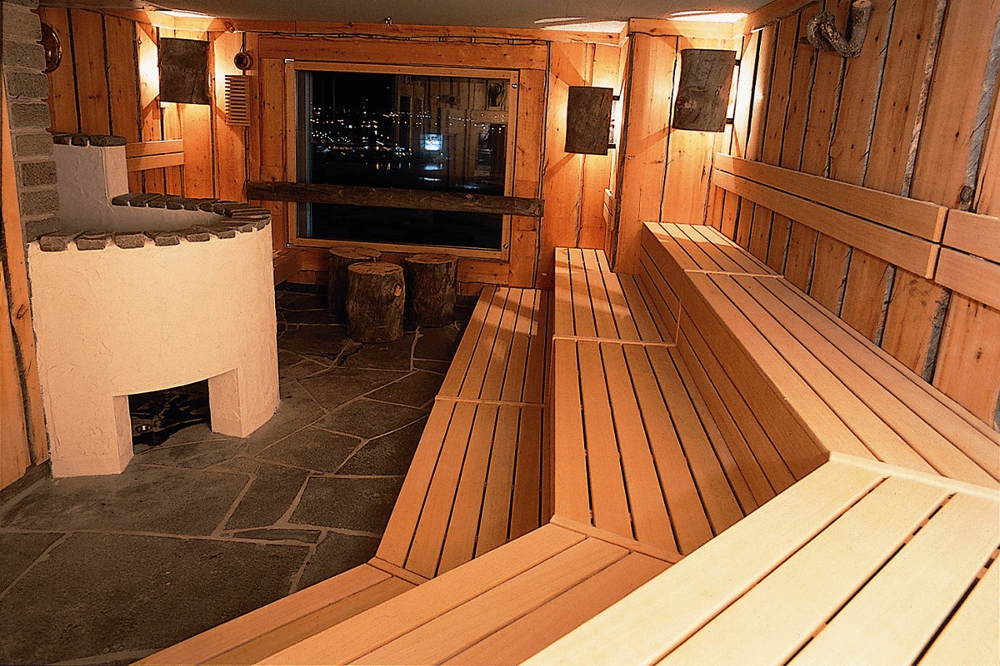
Сауну сделали так же, как в Финляндии. Стены обшиты кело, древесиной сосен, засохших прямо на корню. Спинки скамеек сделаны из абаша, дерева с низкой теплопроводностью, поэтому к ним можно спокойно прислониться. Температуру ровно держат около 85 °C: говорят, именно такую любят сами финны. В сауне лежат глыбы каменной соли, а сотрудники проводят здесь ауфгус.
Римская парная «Термаре»
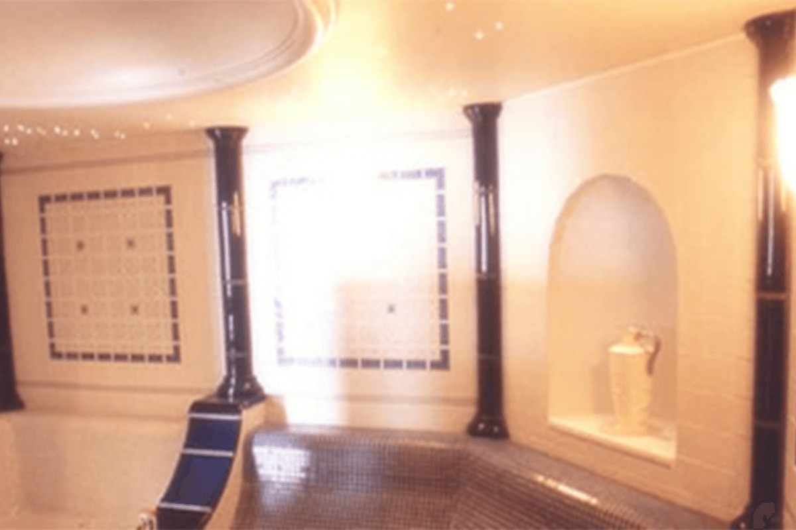
Римскую парную «Термаре» прогревают пол и стены, тепло идёт от них излучением. Плитку для отделки привезли прямо из Европы. Мягкая температура, свет с потолка, ароматы и тихий шум фонтана снимают усталость. Это мягкая парная, которая бережёт тело.
Что такое ауфгус
Ауфгус это немецкая банная программа. На раскалённые камни печи льют воду с ароматическим маслом, а сотрудник полотенцем гонит горячий ароматный воздух к гостям. Тело прогревается до самой глубины, пот идёт обильно и, как считают в спа, выводит из тела лишнее.
Женская зона
Мягкий пар и тёплая плитка
Углекислая ванна
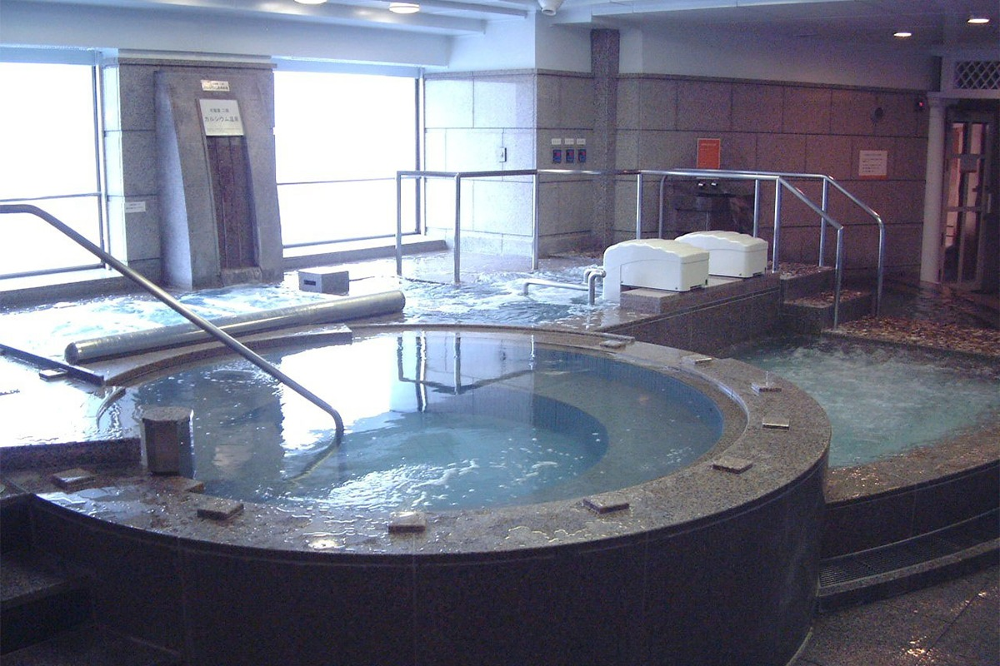
В женском зале тоже есть ванна с водой, насыщенной углекислым газом больше 1000 ppm, и с той же невысокой температурой. Подачу газа здесь останавливают с 3:00 до 5:00 и с 8:20 до 8:30 (по данным 2021 года).
Финская сауна «Twin tower»
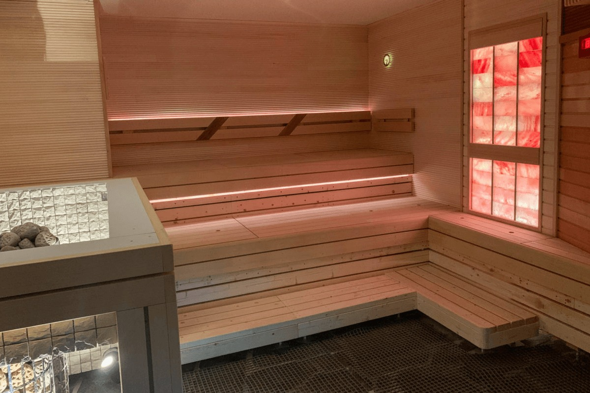
Женская сауна мягче мужской: около 80 °C при влажности 25%. На камни льют воду с ароматическим маслом, а каменная соль помогает потеть и сохранять влагу в коже. Цвет подсветки тоже выбран для отдыха. Печей здесь две, их называют «Twin tower». Вместе с подогревом скамеек и трубами с горячей водой, как в «Термаре», они греют помещение с четырёх сторон, и тепло расходится равномерно.
«Термаре» и мягкий ауфгус
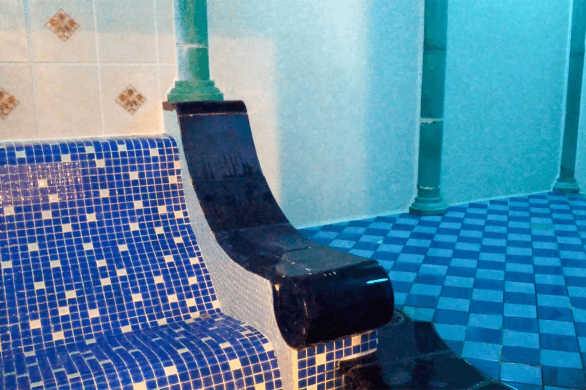
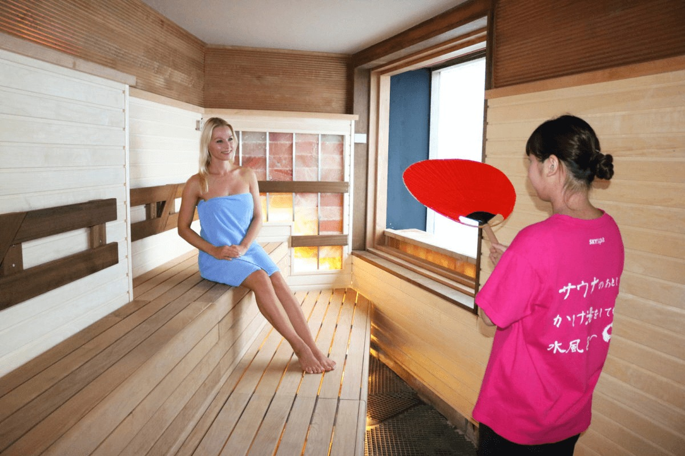
Женская «Термаре» устроена так же, как мужская: пол и стены греют излучением, стены покрыты европейской плиткой, с потолка льётся свет, пахнет ароматами и шумит фонтан.
Ауфгус здесь называют «целебным». Пар разгоняют большим веером. Температура при этом не меняется, растёт только влажность, и жар кажется сильнее, хотя тело не перегружено. Пот выводит лишнее и разгоняет обмен веществ. Воды с ароматом на камни в женской сауне льют чуть меньше, чем в мужской, поэтому ауфгус выходит мягче.
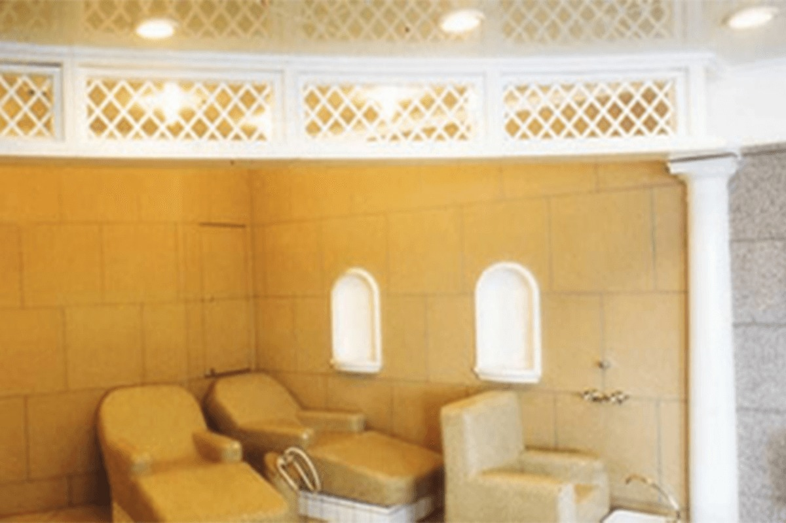
После сауны и джакузи телу нужен отдых. Для этого есть тёплые лежаки и кресла: плитка в них нагрета сама, тепло обнимает со всех сторон, и тело не остывает.
Отдых
Кресла, капсулы и вид на Бэй-Бридж
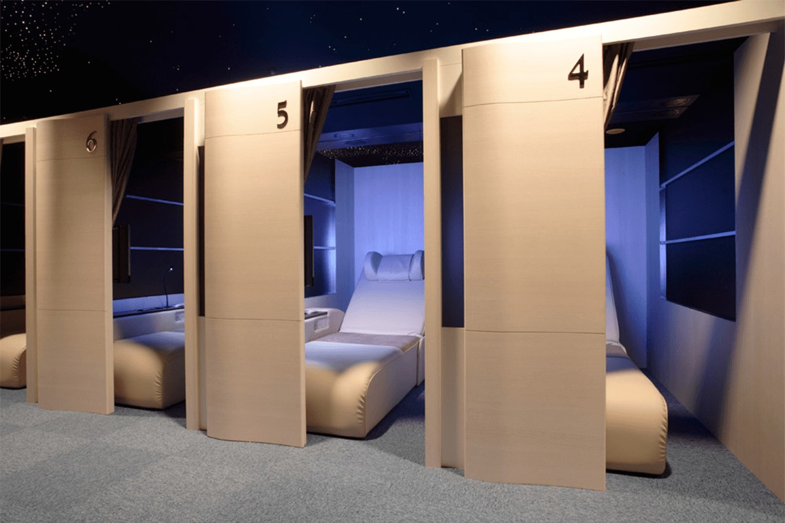
В мужском зале отдыха стоят кресла с полностью автоматической регулировкой. В них смотрят телевизор, читают или дремлют, и кажется, что сидишь в небе. В премиальном зале места отделены друг от друга, у каждого кресла 20-дюймовый широкий монитор. Кресла из материала с эффектом памяти раскладываются в ровную постель. Места здесь бронируют, поэтому можно спокойно уйти в спа или на массаж и вернуться на своё место.
Есть и капсулы: их выбирают, когда опоздали на последний поезд, это недорогой ночлег вместе со спа. На первом этаже того же здания находится YCAT, автовокзал, откуда идут прямые автобусы в аэропорты Нарита и Ханэда, так что спа удобно и в командировке.
Общий зал для мужчин и женщин смотрит на ночную Ёкогаму и мост Бэй-Бридж. Здесь есть ванна с каменной солью и тёплый пол, воздух держат в приятной температуре. После бани сюда приходят отдохнуть, потянуться и поспать, а ещё здесь можно заниматься по фитнес-программе.
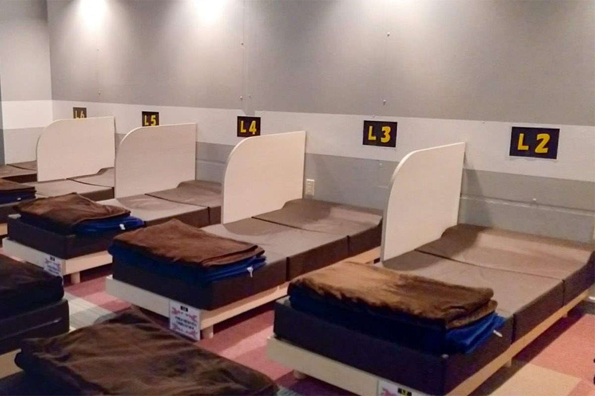
В женской зоне есть спальная комната с матрасами и лёгкими одеялами, места в ней бронируют. Отдельно устроена соляная спальня: все стены покрыты гималайской каменной солью. Минералы соли, как считается, полезны для здоровья, а сама соль успокаивает и помогает крепко уснуть.
Еда
Ресторан KOO
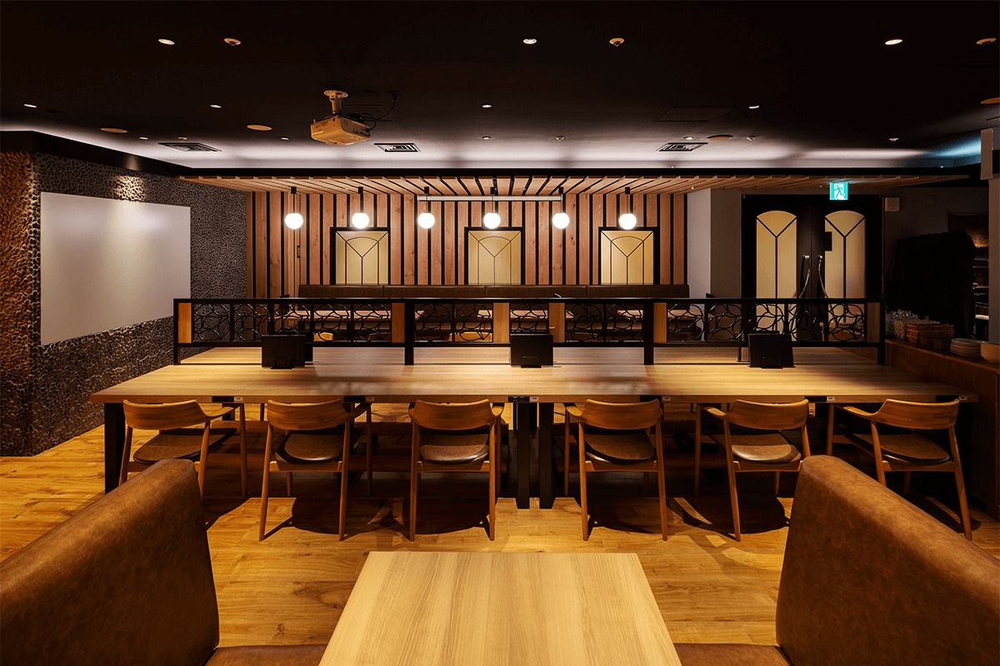
После бани можно зайти в ресторан KOO. Здесь пьют пиво с закусками после сауны, заказывают лёгкие блюда для тех, кто бережёт здоровье, и наборы вместе с посещением спа. Для компаний есть отдельные комнаты. В 2021 году ресторан подавал завтраки с 6:30 до 10:00, основное меню с 11:30 до 22:30, а по пятницам и субботам ночное меню до 3:30.
Sky Spa Yokohama
- Адрес
- префектура Канагава, Ёкогама, район Ниси, Такасима, 2-19-12, Sky Building, 14-й этаж
- Телефон
- +81 45-461-1126
- Часы работы
- круглосуточно, без выходных; бани закрыты с 8:30 до 10:30
- Цены / Вход
- только с возраста средней школы (примерно с 12 лет)
- Сайт
- skyspa.co.jp